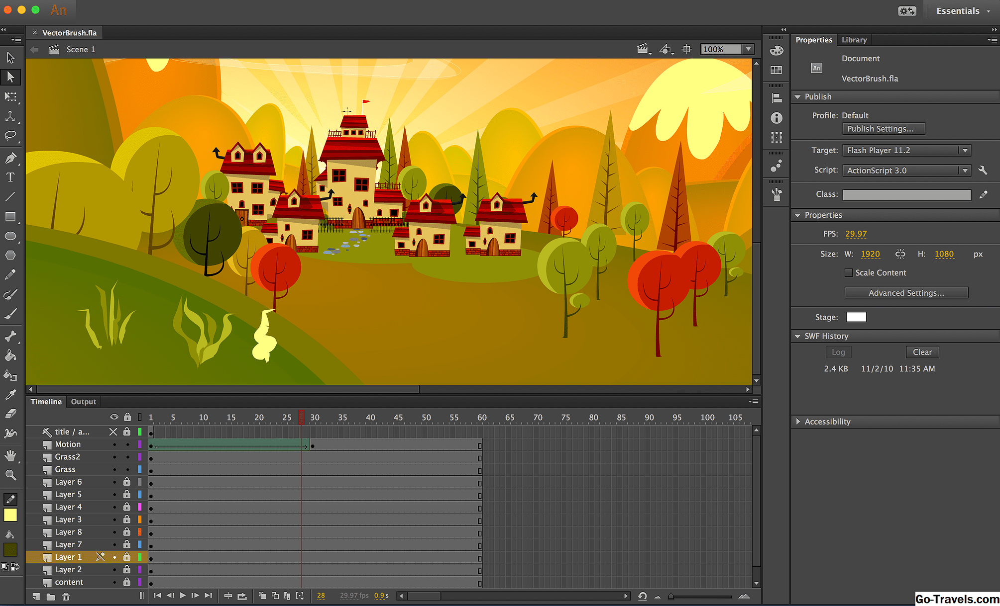
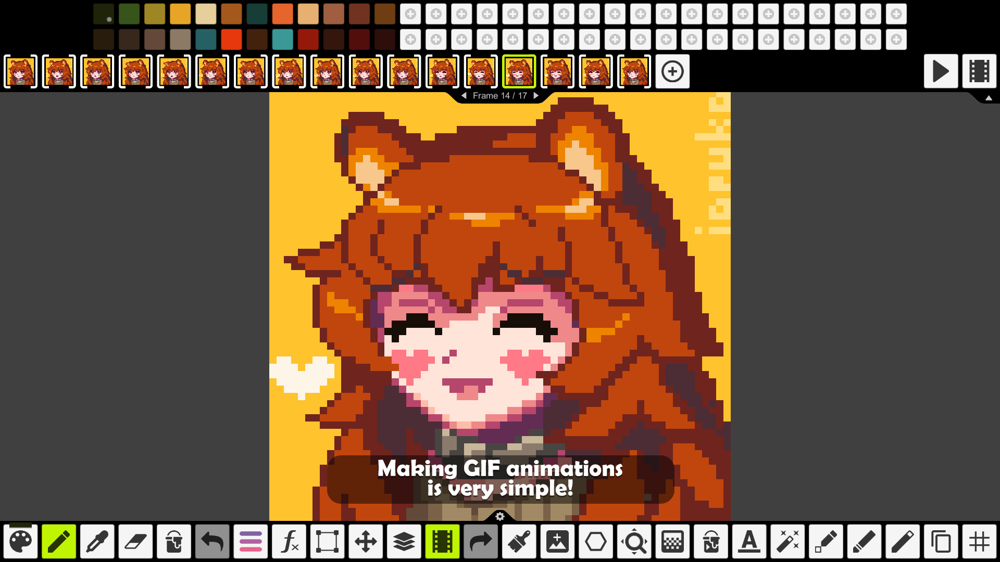
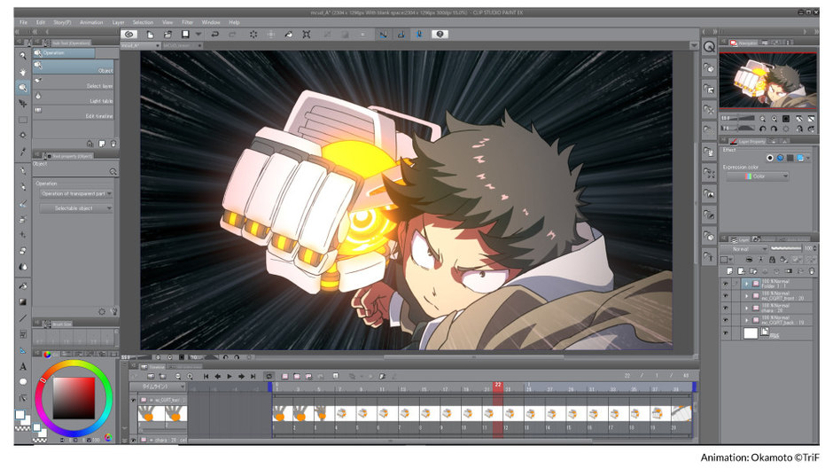

Adobe Animate — программа для создания мультимедиа и компьютерной анимации, разработанная Adobe Systems. Adobe Animate может использоваться для создания векторной графики и анимации.

позволяет разрабатывать интерактивную анимацию для игр, телепередач и веб-сайтов. Можно оживлять мультфильмы и рекламные баннеры, создавать анимированные надписи и аватары, добавлять интерактивные элементы в электронные руководства и инфографику. Также вы сможете быстро публиковать контент на различных платформах — в любом формате и для любых устройств.
Pixel studio- это новый инструмент для создания пиксель-арта. Программа очень удобна для создания пиксельных gif, проста в освоении. Работает как на пк, так и на андроиде. Не требует никакого дополнительного оборудования, такого как графический планшет или графический монитор. Только мышка! Только хардкор!
В Pixel Studio есть слои, анимация и все необходимые инструменты для создания крутых проектов.


Clip studio paint
Clip studio paint, ранее Manga Studio или ComicStudio в Японии, представляет собой семейство программных приложений для Mac OS X и Microsoft Windows, используемых для цифрового создания комиксов и манги. Он поставляет мощные инструменты для рисования и раскраски для резки, что делает его необходимым для профессиональных художников комиксов и манги.

У него есть функции, общие с графическим программным обеспечением общего назначения, таким как Adobe Photoshop, набор инструментов Clip Studio Paint сфокусирован и оптимизирован для использования при создании комиксов и манги.